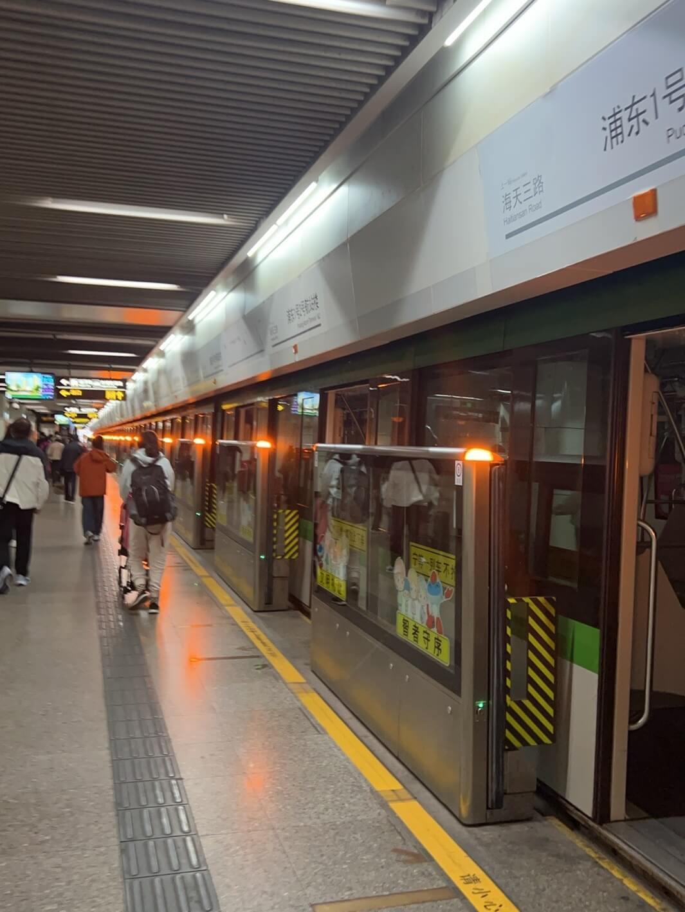
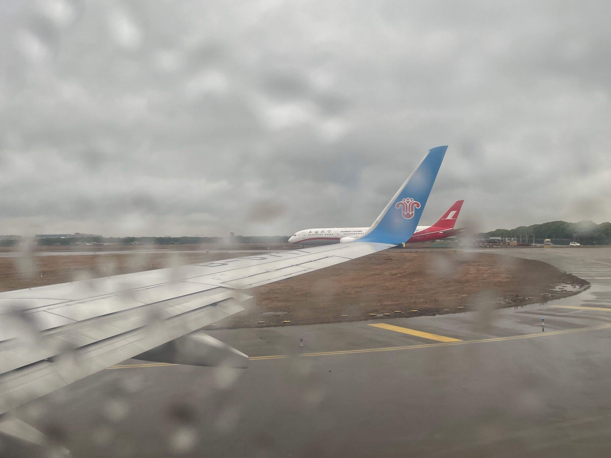

Time to go 😭. I got up at 8 AM and began my journey to Shanghai Pudong International Airport.
The city was still slowly waking up as I packed my bags and left the hotel. The streets were quieter than usual, and for the first time in five days, it started to rain — as if Shanghai itself knew it was time to say goodbye. I took a taxi to the nearest metro station. The car moved slowly through the rain, giving me a final chance to take in the streets of Shanghai one last time.
During the ride, I kept replaying our trip in my mind — the Gundam statue, the wild bike rides, Jing’an, the sea I didn’t see, and all the laughter we shared. Even though it was just less than four days, it felt like a full chapter of life.

At the airport, everything moved so fast — check-in, security check and boarding gate. My flight was delayed by half an hour. Maybe it was trying to tell me: take your time? So I didn’t rush in the terminal, instead, I walked slowly and enjoyed the last moments.
When we first arrived, we flew with Shanghai Airlines. Later, when I was leaving, there happened to be another Shanghai Airlines plane on the taxiway just to the right of my plane. That coincidence almost made me cry. It felt like coming full circle, and I couldn’t believe how quickly these five days passed.

As the plane took off and the view of Shanghai grew smaller and smaller behind me, emotions welled up inside heart. The city’s sparkling skyline faded into the clouds, yet it remained vivid in my heart.
After leaving Shanghai, the three of us all felt like we had withdrawal symptoms. The trip to Shanghai really left a deep and lasting impression on us, and we hope there will be a next time.
Hope to see you again, Shanghai 🥲.
About this Post
This post is licensed under CC BY-NC 4.0.